Layer 2 Routing (STP)
Layer 2 Networks with Ethernet
So far, we’ve shown Layer 2 protocols as operating on a single link with multiple computers attached to it, but we could introduce multiple links and build a network entirely using Layer 2. Packets could be forwarded, and machines could even run routing protocols, all exclusively using Layer 2 MAC addresses.
The routing protocols we ran at the IP layer could also work at Layer 2, though one downside is that we can’t aggregate MAC addresses. IP addresses are allocated based on geography, but MAC addresses are allocated based on manufacturer, so there’s no clear way to aggregate them. This downside is why we can’t build the global Internet out of only Layer 2.
If there are multiple links in a single local network, we’d have to ensure that if someone broadcasts a message, any switches at Layer 2 forward the packet out of all outgoing ports.
Multicast gets more complicated in a Layer 2 network with multiple links. Additional protocols are needed, discussed later (in the Special Topics section).
One example of multicast being useful on a LAN is Bonjour/mDNS, a protocol developed by Apple. In this protocol, all Apple devices (e.g. iPhone, iPad, Apple TV) are hard-coded to join a special group on the local network. If your iPhone wants to find nearby devices to play music (e.g. Apple TV, Apple speaker or HomePod or whatever they call it), the iPhone can multicast a message to the group, asking if anybody can play music. Devices in the group can also multicast responses, saying “I am an Apple TV and I can play music.” Interestingly, this protocol actually also uses DNS in the multicast group to send SRV records, which maps each machine to its capabilities.
Historical note: In the modern Internet, we’ve said that the terms “router” and “switch” are interchangeable. Now that we have the notion of a Layer 2 network, we could say that a switch only operates at Layers 1 and 2, while a router operates at Layers 1, 2, and 3.
If you go back to our picture of wrapping and unwrapping headers, we’ve assumed that every router parses the packet up to Layer 3, and forwards the packet to the next router over IP. However, if we had a Layer 2 network with multiple links, a switch only needs to pass the packet up to Layer 2 and forward the packet to the next switch over Ethernet.
Today, pretty much all switches also implement Layer 3, which is why we use the terms interchangeably. Historically, Ethernet predates the Internet, which is why there was a distinction between switches and routers.
Layer 2 Network Topology
Just like we saw in the routing unit, there are many different topologies we can use to connect up computers in a local network.
We could use a single link to connect all the computers, but this is inefficient. We only have a single link’s worth of bandwidth to use. Also, everyone needs to wait their turn to send messages, and if two computers send messages simultaneously, there could be collisions.
We could also use a full mesh, which gives every pair of hosts a dedicated link, but is difficult to scale up.
Just like at Layer 3, we could introduce switches that forward packets through a topology, toward their final destination. But, just like at Layer 3, this introduces the routing problem, where the switches need to decide where to forward packets.
In this section, we’ll explore some routing protocols that are specifically designed for local Layer 2 networks. We’ll also see some challenges that prevent these protocols from being scaled up and used for the global Layer 3 network.
Forwarding with Flooding
The most naive approach to forwarding is to flood every packet you receive. When a switch receives a packet, it sends the packet out of every port.
As a slight optimization, we don’t need to send the packet back out of the port we received the packet from.
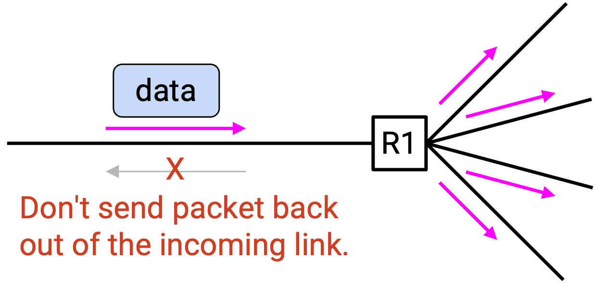
This naive approach has two major problems:
-
It wastes bandwidth. Copies of the packet get unnecessarily sent toward switches and hosts that don’t need that packet.
-
Flooding can cause packets to loop and overwhelm the network.
Learning Switches
Let’s start with the first problem: Flooding packets wastes bandwidth.
To solve this problem, we’d like to populate the forwarding tables for switches, so that they are able to forward packets directly toward their destination, instead of flooding copies of the packets in all directions.
We could run a routing algorithm to populate the forwarding tables, but an even simpler approach is use learning switches.
Suppose you are router R2. You don’t have any information about the full network topology, and your forwarding table is empty. You have ports to the north, south, east, and west.
You see a packet coming from the port to your west. The packet says: “From A, To B.” From this packet, you can deduce that A must be to your west.
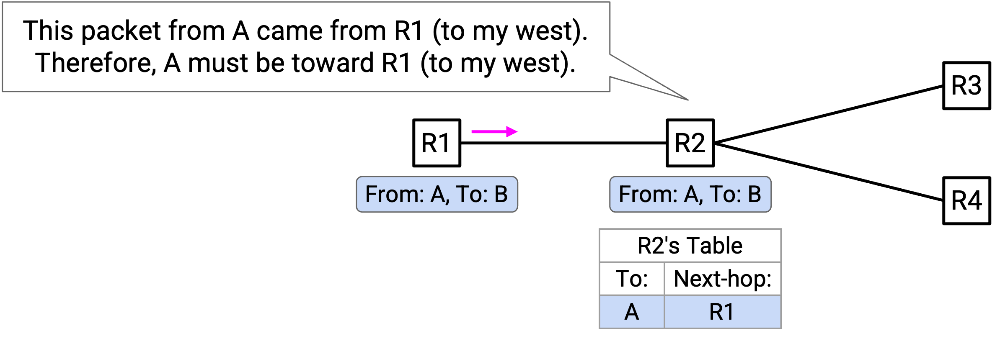
You can now add an entry to your forwarding table: Packets for A should be forwarded to the west.
This is the key idea behind learning switches. When you receive an incoming packet, you get a clue about where the sender is. You can use that information to populate the forwarding entry for the sender.
Note that the incoming packet doesn’t tell you anything about where the recipient is. In the example above, when you receive “From A, To B” from the west port, that doesn’t tell you anything about where B (recipient) is. Instead, you populate the forwarding table for A, so that future packets for A can be forwarded to the west.
As you receive more incoming packets, you are able to start filling in your forwarding table with more entries. If you receive a packet whose destination is not in your forwarding table, you can still forward the packet by flooding it out of all ports (except the incoming port).
For example, when you receive “From A, To B” from the west port, you don’t have a forwarding table for B yet. Therefore, you should forward this packet out of all ports (except the west port).
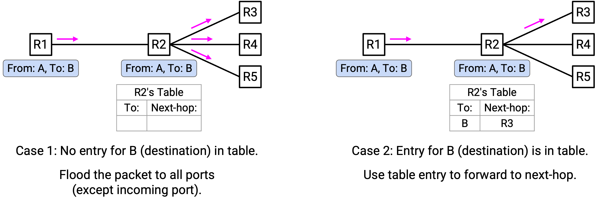
Note: There’s no need to send the packet back out of the incoming port (e.g. west), because the previous switch/host (e.g. to your west) already had a copy of the packet and forwarded it (that’s how it reached you). If you send the packet back again, the previous switch/host would just make the same forwarding decision again (either flooding again, or forwarding back to you again), and this repeated forwarding doesn’t help the packet reach its destination.
In summary, learning switches have two rules to follow:
-
When you receive an incoming packet, update the forwarding table to associate the sender with the incoming port.
-
If the destination is in your forwarding table, then forward the packet to the correct next-hop. Otherwise, flood the packet out of all ports except the incoming port.
Here’s an example of learning switches in action. Consider this network topology. All switches are learning switches, and their forwarding tables start empty.
A sends a packet to B. A forwards the packet to R1.
R1 sees the packet “From A, To B” incoming from Port 1. Therefore, A must be toward Port 1. R1 adds this mapping to its forwarding table.
R1 does not know where B is, so R1 floods this packet out of all ports (except the incoming port).
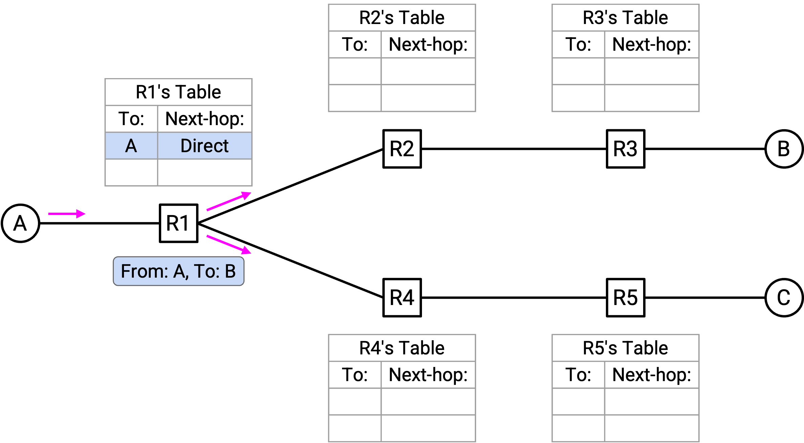
R2 and R4 both receive the “From A, to B” packet. Both of them now have a clue about where A is, and add a mapping for A to their forwarding tables. Both of them do not know where B is, so they flood the packet out of all ports (except the incoming port).
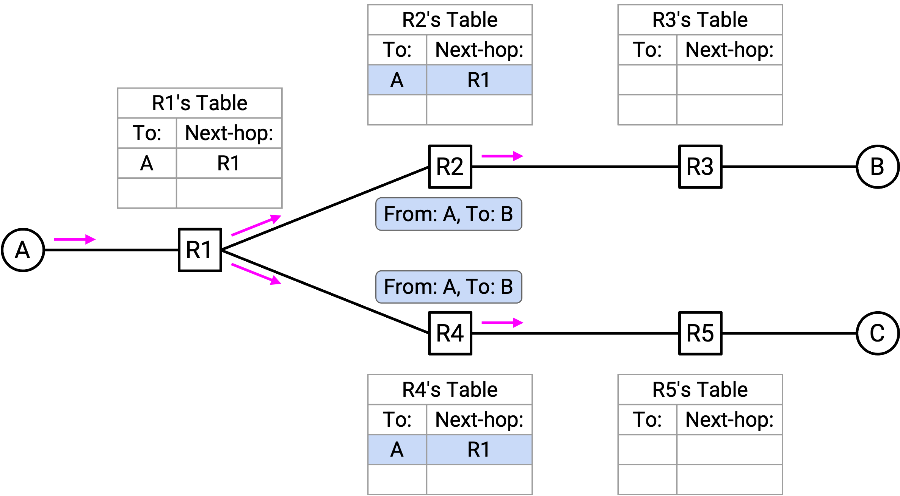
R3 and R5 both receive the “From A, to B” packet. Both of them now have a clue about where A is, and add a mapping for A to their forwarding tables. Both of them do not know where B is, so they flood the packet out of all ports (except the incoming port).
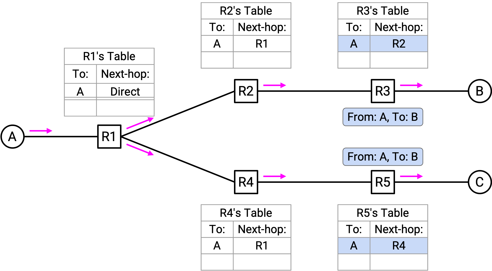
C receives the “From A, to B” packet. C checks the header and realizes that it is not the intended recipient of this packet, so C drops the packet.
B receives the “From A, to B” packet. B checks the header and realizes that it is the recipient, so B successfully receives and processes this packet.
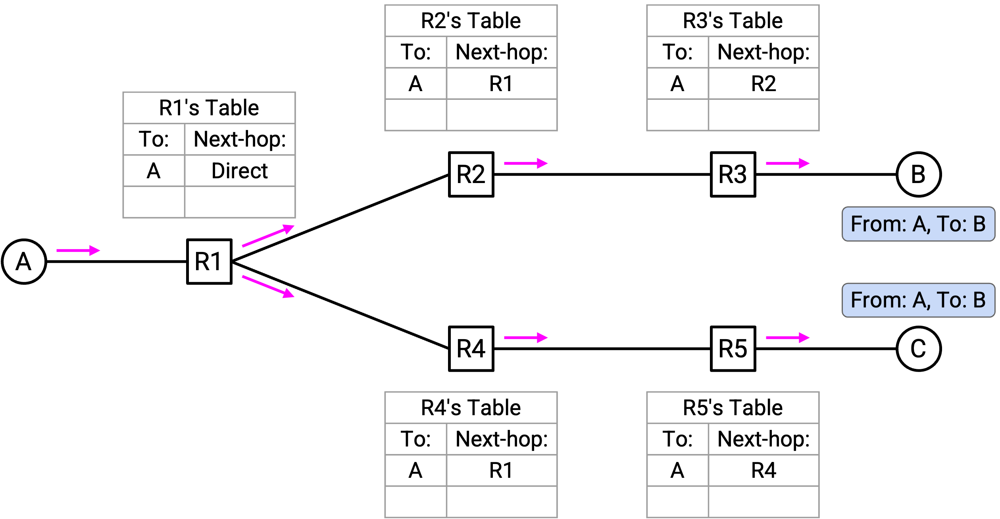
Next, suppose B sends a packet to A. First, B forwards the packet to R3.
R3 receives the “From B, to A” packet. This gives R3 a clue about where B is, so R3 adds a mapping for B to its forwarding table. Also, R3 notices that A is in its forwarding table, so R3 can forward the packet along the next-hop to A (instead of flooding the packet).
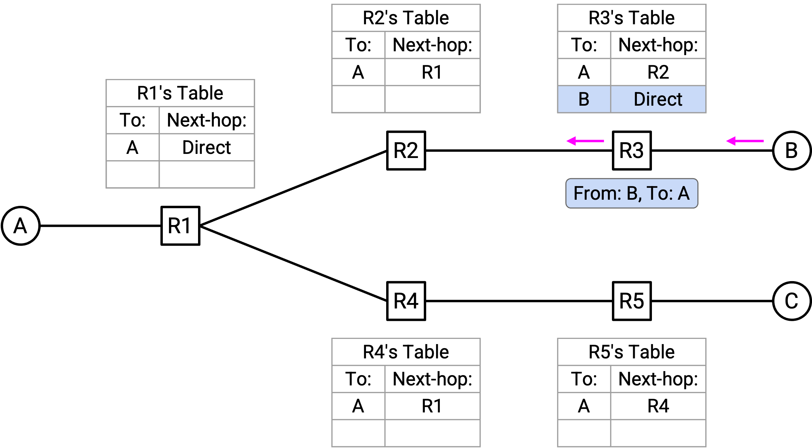
R2 receives the “From B, to A” packet. This allows R2 to add a mapping for B to its forwarding table. R2 looks in its forwarding table and sees an entry for A, so it forwards the packet along the next-hop to A.
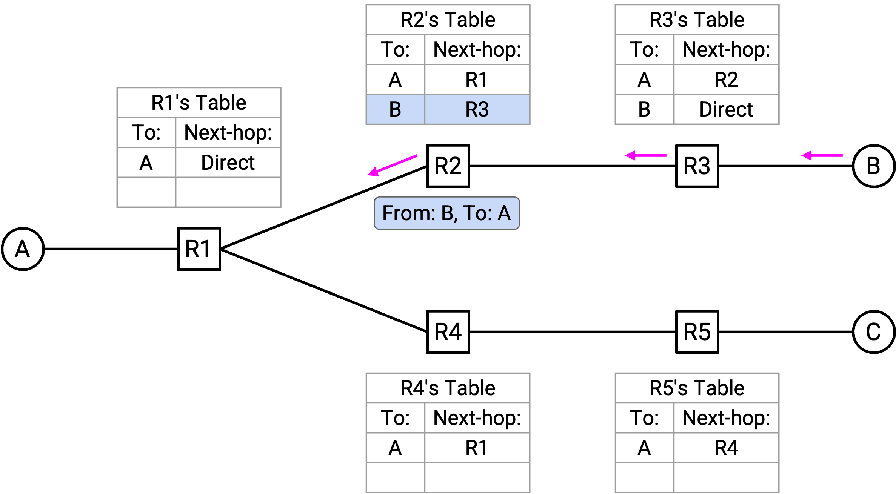
R1 receives the “From B, to A” packet. This allows R1 to add a mapping for B to its forwarding table. R1 looks in its forwarding table and sees an entry for A, so it forwards the packet along the next-hop to A.
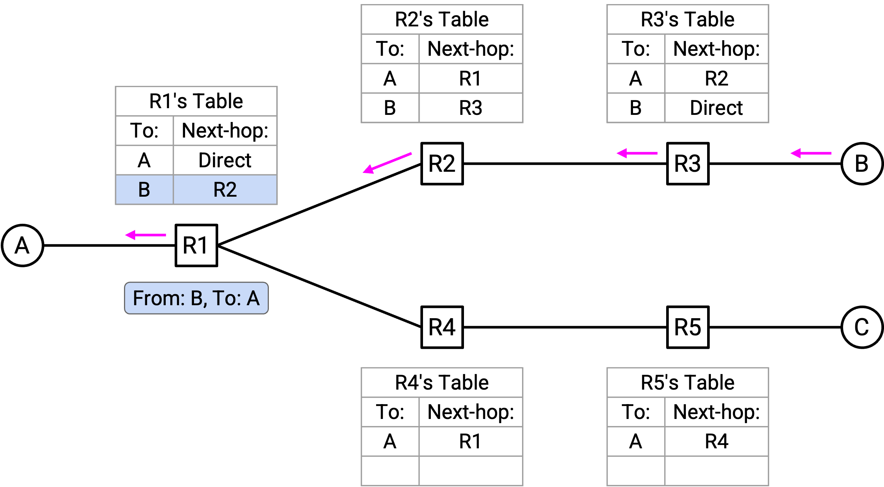
As more packets get sent, more entries get added to forwarding tables, and less flooding takes place.
One last feature we need to add: When a forwarding table entry is installed, we assign it a TTL. If the TTL expires, the entry is deleted. This allows routes that are busted (e.g. because a link, host, or switch went down) to expire. For example, if B leaves the network in the example above, the TTL will ensure that all forwarding tables for B will eventually expire.
STP Motivation: Loops
Recall that flooding has two problems: It wastes bandwidth, and loops can overwhelm the network. Learning switches solved the first problem, but they do not solve the problem of loops.
To see why, consider this topology with loops. Suppose all switches are learning switches, and all forwarding tables start empty. A tries to send a packet to B, and forwards the packet to R1.
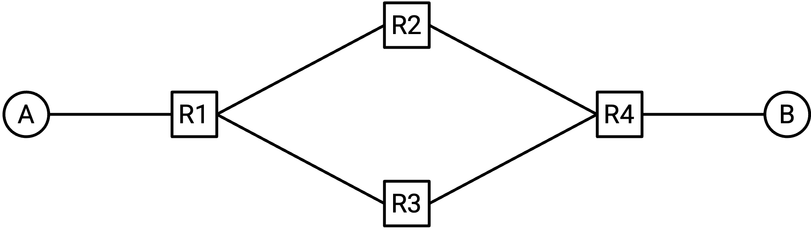
R1 has no entry for B, so it floods the packet to R2 (and R3).
R2 has no entry for B, so it floods the packet to R4.
R4 has no entry for B, so it floods the packet to R3.
R3 has no entry for B, so it floods the packet to R1.
R1 has no entry for B, so it floods the packet to R2, and the cycle continues.
At the same time, a copy of the packet is also traveling in a loop in the other direction: R1 flooded to R3 initially, which then flooded to R4, which then flooded to R2, which then flooded to R1, which then floods to R3, continuing the cycle.
During this entire process, the switches install forwarding entries for A, but they never get any entries for B, so the infinite loop is never resolved. Nobody has a forwarding entry for B, so everybody floods the packet when they receive it.
This problem is sometimes called a broadcast storm, since the network is getting overwhelmed with broadcast traffic.
How do we solve this problem? Ideally, we’d like to “delete” redundant links, so that the topology has no loops. Then, the learning switch approach will work just fine, with no broadcast storms.
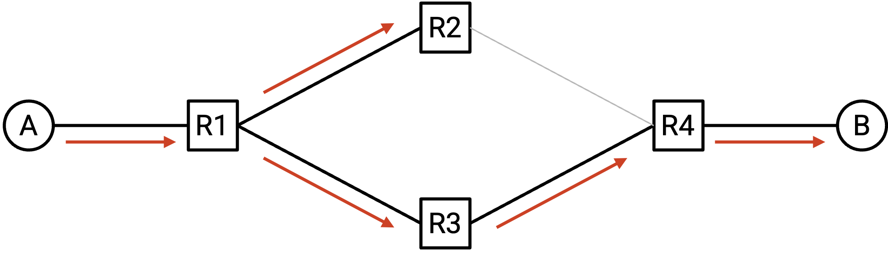
Note: Another solution might be to add a TTL field to each packet, so that the packet expires after being forwarded too many times. Unfortunately, the Ethernet header does not have a TTL field, so this solution can’t be implemented.
Note: Another solution might be to drop packets if you’ve seen them before. This would require attaching some sort of timestamp or unique ID to each packet. Again, the Ethernet header doesn’t have a header field for this, so this solution can’t be implemented either.
STP: Electing a Root
The Spanning Tree Protocol (STP) helps us disable links, so that the resulting topology has no loops. This will help us avoid broadcast storms.
Note that hosts don’t participate in this protocol. Routers will work together to disable links and reomve loops from the topology. As a result, we’ll ignore hosts when describing this protocol.
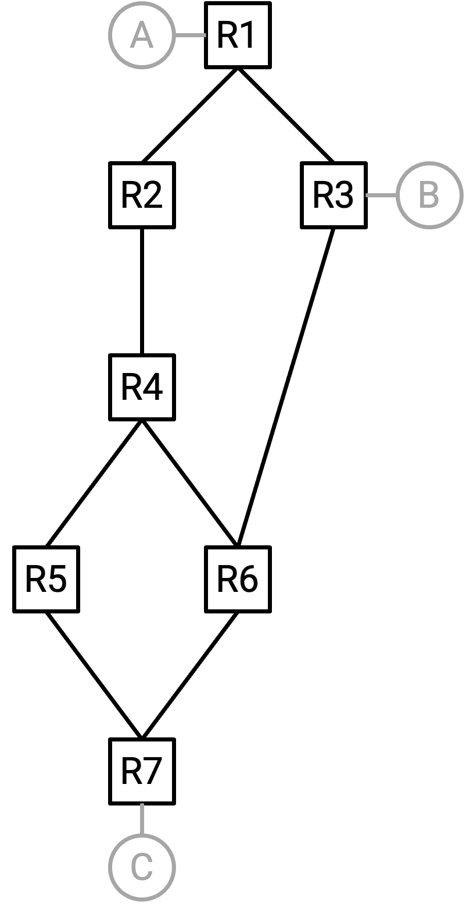
How does STP decide which links to disable? Let’s start by solving this problem with a global view of the network. Then, we’ll think about how switches exchange messages to achieve this, without a global view of the network.
The first step in STP is to elect a root switch, as follows:
Each switch is assigned an ID, consisting of a priority value (manually set by the network operator), and the MAC address of the switch.
When comparing two switches, the switch with the lower priority has the lower ID. If the priorities are tied, then the switch with the lower MAC address has the lower ID.
The root switch is the switch with the lowest ID.
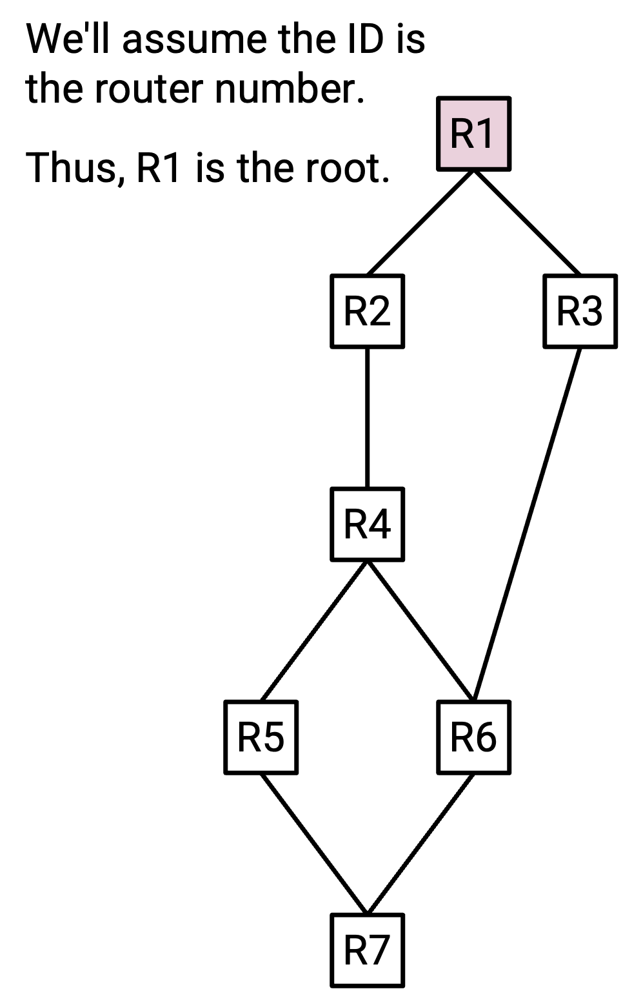
If the network operator wants to pick a specific root, they can do so by manually setting the priorities of various switches. Or, the operator could leave all the switch priorities at their default value, which would cause the switch with the lowest MAC address to be elected as the root. For these notes, we won’t discuss which root is best; the important thing is just that one of the routers is unambiguously chosen as the root.
STP: Port States
Now that we have a root switch, we will classify every port on every switch into one of three states:
-
Designated Port: These are ports pointing away from the root (i.e. they lead somewhere further from the root).
-
Root Port: There are one or more ports pointing toward the root (i.e. they lead somewhere closer to the root). Of these ports, the one along the least-cost path to the root is the root port.
-
Blocked Port: All ports pointing toward the root, that are not the root port (best way to reach the root), are blocked ports.
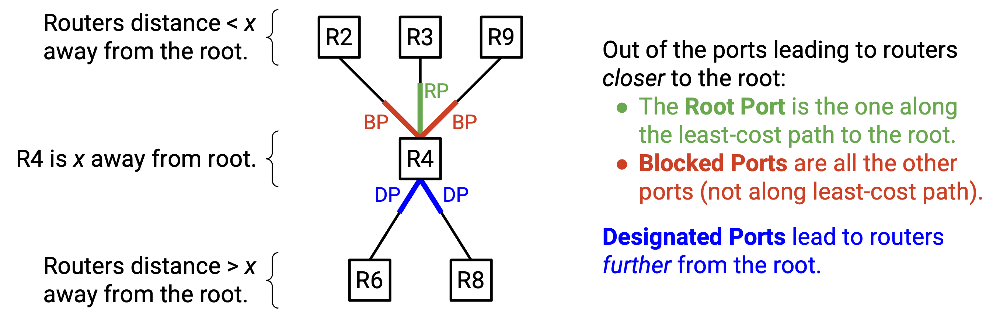
Here are some examples of the port states in action. Assume that IDs are ordered according to the router labels. This means that R1 has the lowest ID, so it is elected as the root switch.
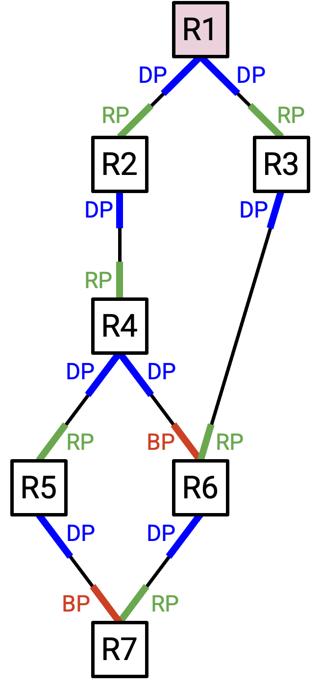
All the ports on the root switch (R1) point away from the root, so they are all designated ports.
R2 has two ports. Only one of them points toward the root, so that must be the best path toward the root. Therefore, R2’s upward-facing port is labeled as a root port.
The other port at R2 points away from the root, so R2’s downward-facing port is labeled as a designated port.
R6 has three ports. The downward-facing port points away from the root, so it is a designated port.
At R6, the ports to R4 and R3 both point toward the root. However, the port to R3 provides the least-cost path to the root (cost 2), while the port to R4 provides a worse path to the root (cost 3). Therefore, we label the port to R3 as the root port (best way to reach root), and the port to R4 as a blocked port (points toward root, but not the best path).
Sometimes, we have a tie, and there are two best ways to reach the root.
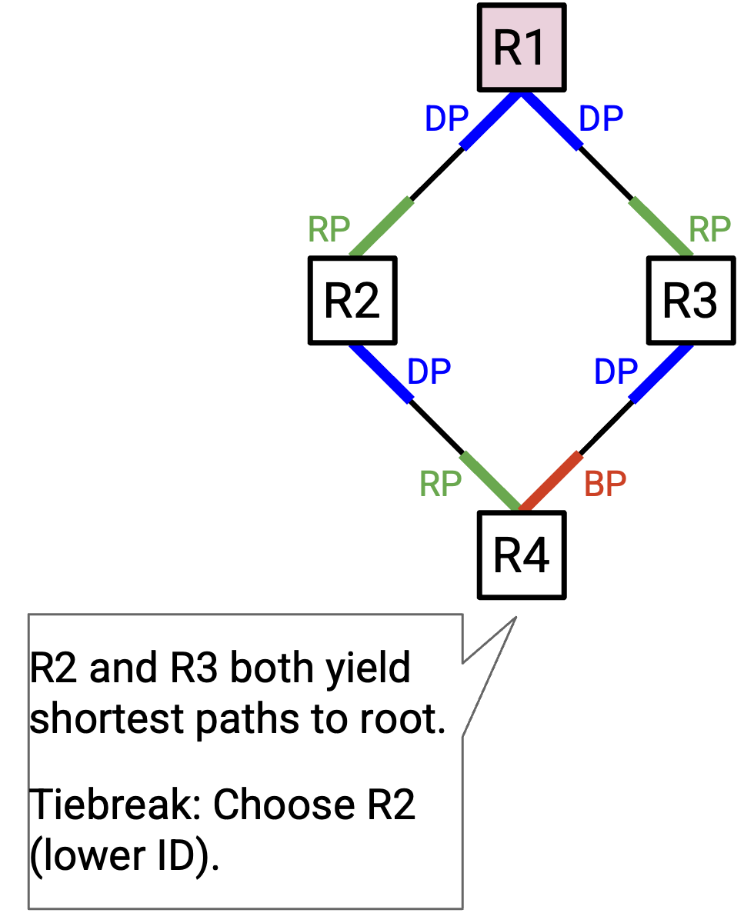
For example, at R4, both the port to R2 and the port to R3 point toward the root, and both of them provide a cost-2 path to the root. In case of a tie, we will say that the next-hop with the lower ID is the better path to the root. This makes the port to R2 the root port, and the port to R3 a blocked port.
Sometimes, we’ll have a link that leads somewhere equally-far from the root.
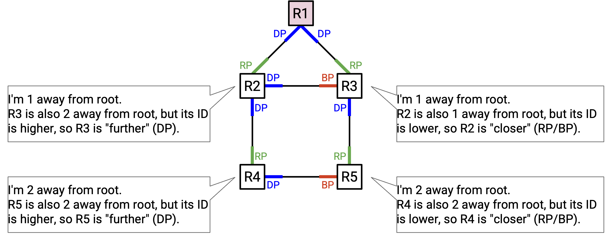
For example, R4 is distance 2 from the root, and it has a link to R5, which is also distance 2 from the root. Again, we’ll use router IDs as a tiebreaker. If the link leads to a higher-ID router, we’ll say that the link points away from the root. If the link leads to a lower-ID router, we’ll say that the link points toward the root. In this example, R4’s right-facing port points away from the root (leads to somewhere same-distance, but higher-ID), so it is a designated port. On the other hand, R5’s left-facing port points toward the root (leads to somewhere same-distance, but lower-ID), so it is either a root port or a blocked port.
STP: Disabling Links
Now that every port has been assigned a state (designated port, root port, or blocked port), we are ready to remove loops from the network topology.
To remove loops, each switch simply needs to pretend like its blocked ports don’t exist. In other words, do not send any user data out of that port, and do not receive any user data from that port.
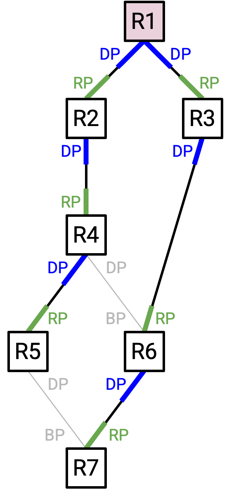
(Note: We specify user data here because STP packets could still be sent and received from the blocked port. This will allow STP to re-enable the blocked port if the topology changes.)
If we stop sending user data along blocked ports, then any link with a blocked port will end up being disabled.
Why does this work? Let’s think about it from the perspective of a specific switch. Your root port is the best way for you to reach the root. Your blocked ports also point toward the root, but they are not the best path to the root. This means that the blocked port actually creates a redundant (but worse) path to the root, so we should disable that link.
One concern you might have is: What you block a port, but somebody else needs to use that disabled link to forward packets to you, on their way to the root? Luckily, this will never happen. Remember that your blocked port points toward the root (i.e. you are further, and the other side is closer to the root than you). Therefore, if the switch on the other side (closer) forwards packets to you (further), they’ll be forwarding packets away from the root. This means we can safely block this port and disable this link without worrying about other switches trying to use that link as part of their path to root.
By contrast, designated links cannot be safely disabled, because they lead away from the root (i.e. the switch on the other side is further from the root than you). The switch on the other side might actually want to forward packets to you, because you are along their best path to root. Luckily, this is also not a problem. Although you cannot safely disable this link, you can rely on the switch on the other side to disable the link if they don’t need it. The switch on the other side is further than you, so they will either keep this link if it’s their best path to root (i.e. root port), or they will disable this link if it’s not their best path to root (i.e. blocked port).
With this strategy, every link is disabled by only one side. The side that’s further away asks the question: Am I using this link as my best path to root? If yes, this link’s port is a root port. If no, this link’s port is a blocked port.
The side that’s closer always makes this link’s port a designated port. This has the effect of leaving the decision to disable up to the further side. This is good, because the closer side has no idea if the further side will be using this link as their best path to root.
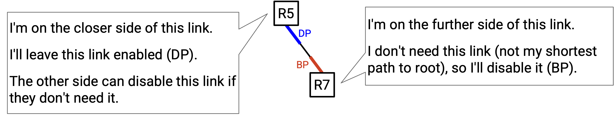
STP: Designated Ports
Side note: Why did we call them designated ports? So far, we’ve been drawing networks where every link connects two machines, but remember that sometimes we can have links that connect multiple computers.
Suppose that a link connecting two switches also has lots of hosts connected to it. If these hosts want to send or receive data, they will send data to the designated port, but not the blocked port. (The blocked port won’t receive any user data.) This ensures that their data takes exactly one path to the destination. If the data was sent to both the designated port and blocked port, the data could take two paths to the destination, creating a loop.
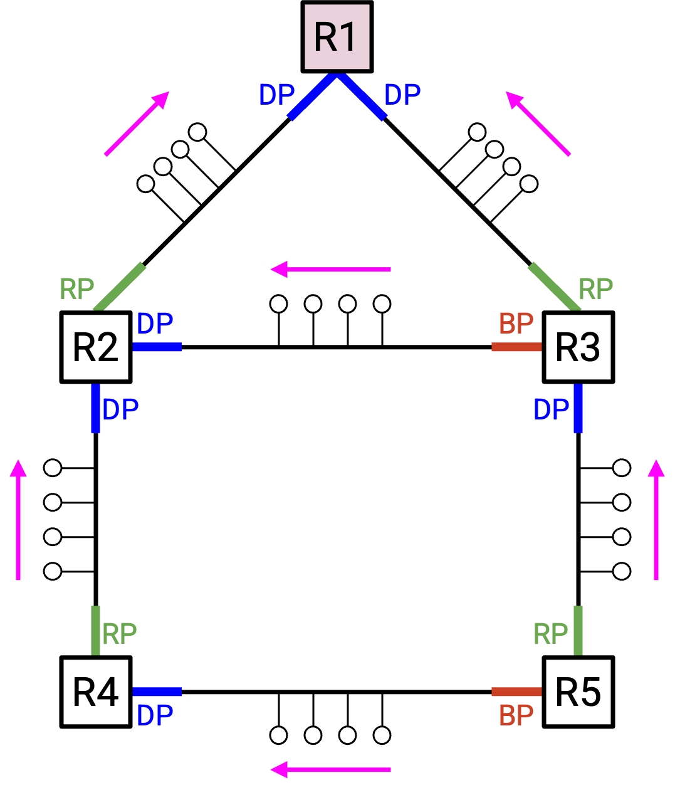
With this in mind, another equivalent interpretation of a designated port is: Hosts on a link should send data toward the designated port to reach the root (or anywhere else on the spanning tree). From the switch’s perspective, the designated port points away from the root. From the hosts’ perspective, sending to the designated port takes them closer to the root (or anywhere else on the spanning tree).
STP: BPDU Exchanges
We now know how to use STP to disable links and remove loops from a network topology. However, our protocol so far assumes global knowledge of the network. You would need a global view to identify the root, and to decide if ports point toward or away from the root.
In order for switches to learn the information they need to label their ports, the switches exchange messages called Bridge Protocol Data Units (BPDUs). These are pretty much the same thing as the control-plane routing messages we exchanged in other routing protocols, but with a fancy name. Note that these control-plane messages are distinct from data-plane user packets (the actual data we’re forwarding).
When the protocol begins, every switch thinks that the root is itself, and the cost to the root (itself) is 0.
As the protocol runs, every switch keeps track of what it thinks the root is, and the best-known path to that root (and the cost of that path).
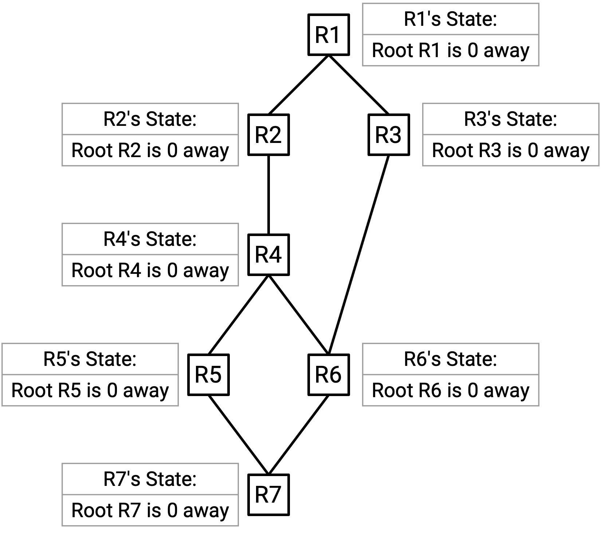
When you send a BPDU, you include two pieces of information: Who you think the root is, and how far away you are from the root. For example, a BPDU might say: “The root is R2, and I can reach R2 with cost 7.”
When you receive a BPDU, you check if it has any “better” information. The BPDU could be better for two reasons:
-
The root in the BPDU has a lower ID. This means that you have discovered a better root. You should abandon your current root and cost, and instead adopt the new root and the path to the new root.
-
The root in the BPDU is the same, but the BPDU is offering a better path to the root. You should adopt the new path to the root.
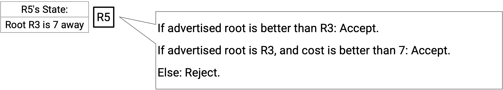
Costs to root are computed just like we did in the distance-vector protocol. For example, suppose your neighbor tells you “The root is R2, and I can reach R2 with cost 7.” Then your cost to the root is your direct link cost to your neighbor, plus your neighbor’s cost to root (as specified in the advertisement).
When you update your state (who you think the root is, or your best-known cost to root), you should send a BPDU to your neighbors to inform them about your new state.
Once the protocol converges, the state gives each switch enough information to label all of its ports. You know the best path to the root, so you can label the corresponding port as the root port.
Your neighbors have also all told you how far away they are from the root. If a neighbor says they are further, then you can label the corresponding port as a designated port. If a neighbor says they are closer (but they are not on your best path to the root), then you can label the corresponding port as a blocked port.
BPDUs are exchanged regularly, so that if the network topology changes, the protocol can adapt and find a spanning tree (i.e. disable links) for the new topology.
STP: BPDU Exchanges Example
Routers send and receive BPDU exchanges in parallel, so there isn’t a specific router that sends the first BPDU. In this example, we’ll show a subset of the BPDUs that get sent.
R3’s initial state says: Root R3 is 0 away. R3’s first advertisement sends this state to its neighbors.
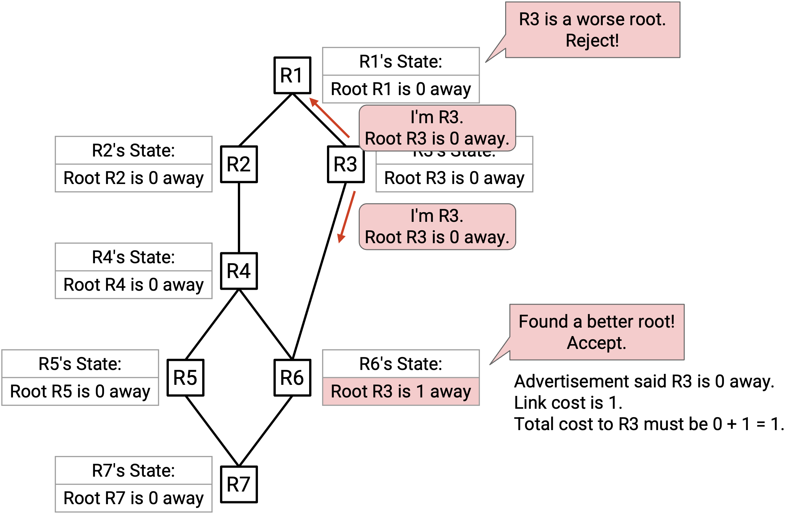
R1 hears this advertisement. R1 currently thinks the root is R1, and the advertisement offers a root of R3. The advertised root is worse (higher ID), so R1 rejects this advertisement.
R6 hears this advertisement. R6 currently thinks the root is R6, and this advertisement offers a root of R3. The advertised root is better, so R6 accepts this advertisement. R6’s updated state says: Root R3 is 1 away. Note: The cost is calculated from 0, the cost in the advertisement from R3, plus 1, the cost of the link to R3.
At this point, R6 has updated its state, so it will send an advertisement to its neighbors (not shown in this demo).
Some time later, R1 sends an advertisement to its neighbors with its state: Root R1 is 0 away.
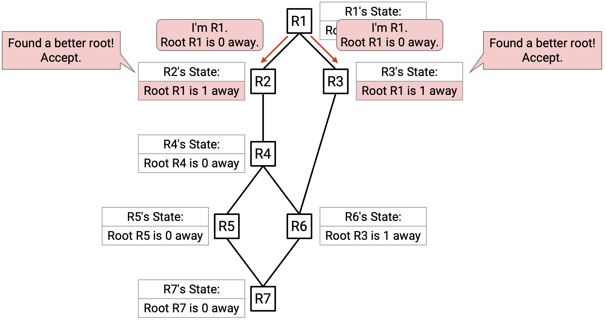
R2 hears this advertisement. The advertised root (R1) is better than the currently best-known root (R2), so R2 accepts this advertisement. R2’s updated state says: Root R1 is 1 away.
Likewise, R3 hears this advertisement, and accepts it because the advertised root (R1) is better than the currently best-known root (R3). R3’s updated state says: Root R1 is 1 away.
R2 and R3 have updated their states, so they will each send an advertisement to their neighbors.
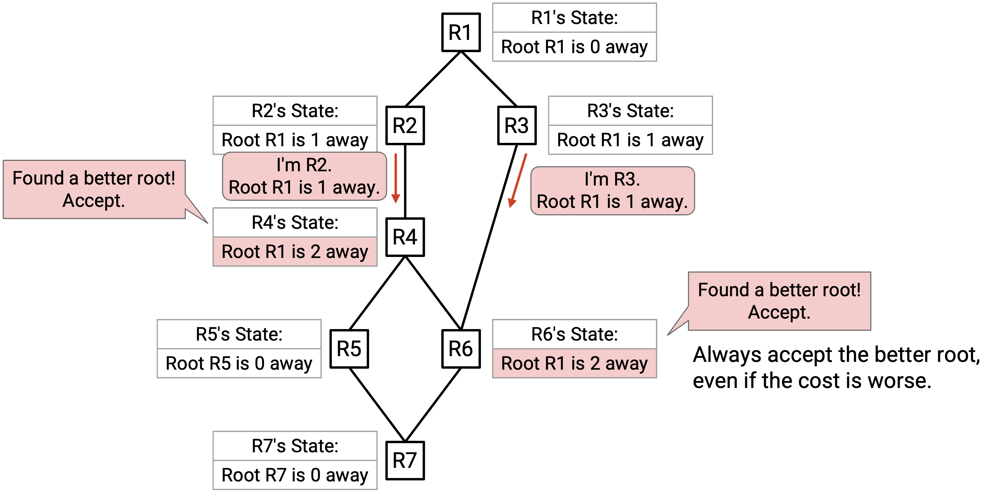
R4 hears the advertisement from R2. The advertised root (R1) is better than the currently best-known root (R4), so R4 accepts this advertisement. R4’s updated state says: Root R1 is 2 away. Note: This cost is computed by summing 1 (cost in advertisement from R2), plus 1 (link cost to R2).
R6 hears the advertisement from R3. The advertised root (R1) is better than the currently best-known root (R3), so R6 accepts this advertisement. R6’s updated state says: Root R1 is 2 away. Note: R6’s old state said R3 was 1 away, and the new state says R1 is 2 away. Even though the new state has a higher distance, it’s still better because the new state has a better root.
R4 and R6 have updated its state, so they will send advertisements to their neighbors with its updated state. We’ll first show R4’s advertisement, then come back to R6 later (again, remember that all of these are happening in parallel in reality).
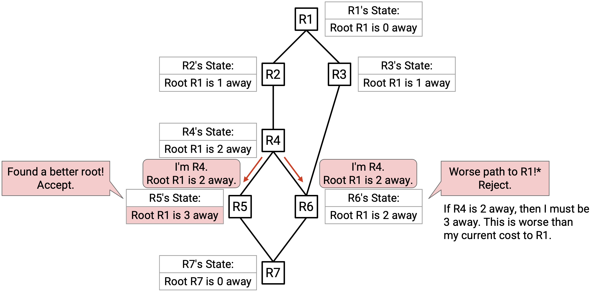
R5 hears the advertisement from R4. The advertised root (R1) is better than the currently best-known root (R5), so R5 accepts this advertisement. R5’s updated state says: Root R1 is 3 away (2 from the advertisement, plus 1 from the link cost to R4).
R6 also hears the advertisement from R4. The advertised root (R1) is the same than the currently best-known root (R1), so we need to check the cost. Accepting the advertisement would give a cost of 2 (from the advertisement), plus 1 (from the link cost to R4), for a total of 3. The currently best-known cost is 2. Therefore, R6 rejects the advertisement (3 is worse than 2).
R5 has updated its state, so it will send an advertisement to its neighbors with its updated state.
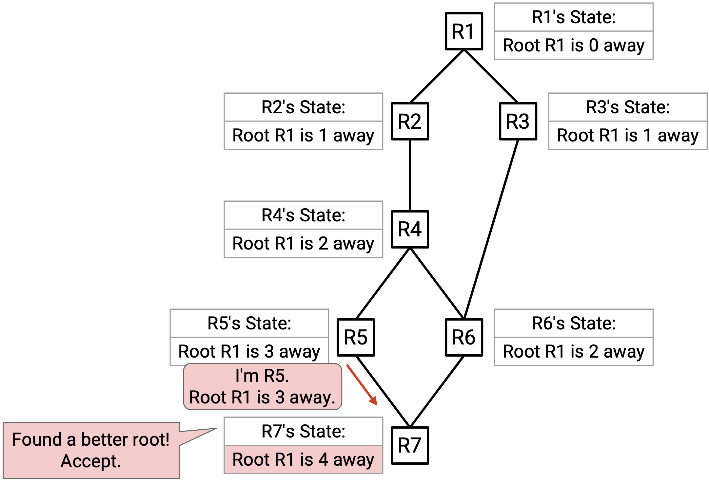
R7 hears the advertisement from R5. The advertised root (R1) is better than the currently best-known root (R7), so R7 accepts this advertisement.
R7 has updated its state, and will send an advertisement to its neighbors, though that advertisement is not shown here (R6 would reject it for having a worse cost to root).
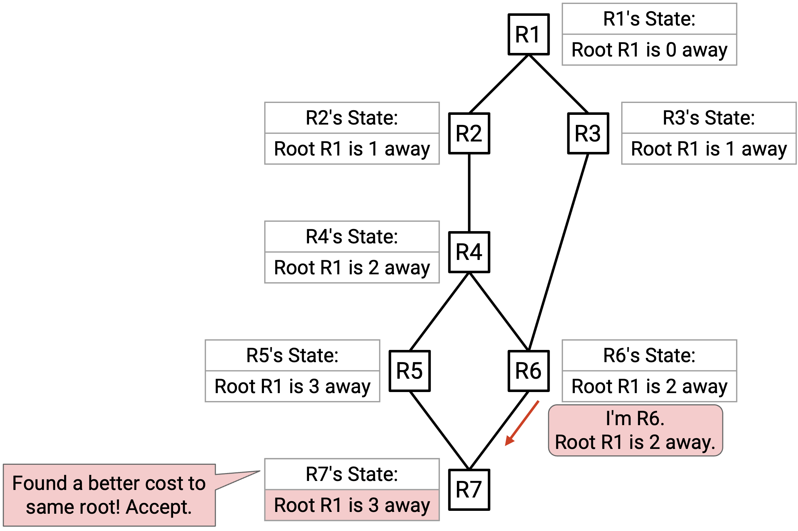
Following up from earlier, R6 sends an advertisement to its neighbors, and R7 receives this advertisement. The advertised root (R1) is the same than the currently best-known root (R1), so we need to check the cost. Accepting the advertisement would give a cost of 2 (from the advertisement), plus 1 (from the link cost to R6), for a total of 3. The currently best-known cost is 4. Therefore, R7 rejects the advertisement (3 is better than 4), and updates its state to have a cost-to-root of 3 (instead of 4).
The routers continue to periodically exchange advertisements with each other. Not all advertisements were shown in this demo, but eventually, the protocol will converge, and all routers will know that the root is R1. Also, all routers will know about their cost to the root.
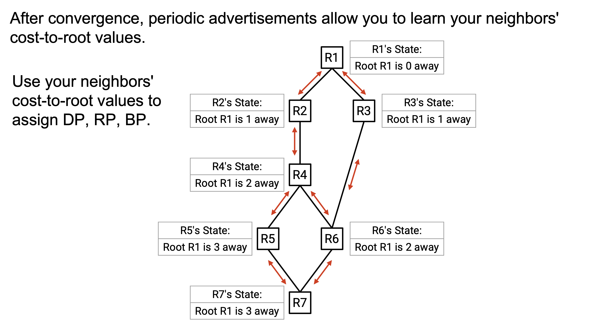
Once all the routers know their cost to the agreed-upon root, they can exchange periodic advertisements. This allows routers to learn about their neighbors’ cost-to-root values, which in turn allows the routers to assign ports as DP, RP, or BP.